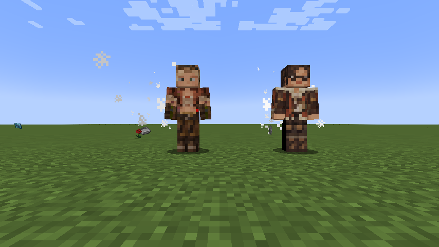

Alma is the expedition handler and researcher. Her skin follows the dark hair, round glasses, rust expedition coat and cream hood of her base appearance.
Spawning
Alma participates in Tensura's otherworlder spawn distribution, including its natural otherworlder replacement and summon selection. Each of the eight regular native entries and these two hunters has a 0.10 weight. Special Shizu/Hinata rolls use Tensura’s native rules. A datapack can override these distributions and loadouts.
Use /summon wildhunt:alma or /give @s wildhunt:alma_spawn_egg for a direct check. Native otherworlder ownership, inventory, home handling, interaction menus and configured Unique-skill drops are inherited. Races, skills and equipment persist through native saving; loading never reinitializes them. Their native entity data supplies 160,000 aura / 80,000 magicules before any applicable modifiers.
Abilities
| Ability | Registry ID | Damage / effect classification | Character fit |
|---|---|---|---|
| Analyst | tensura:analyst |
None — analysis / perception | Field research and analysis |
| Observer | tensura:observer |
None — analysis / perception | Watch monster behavior and the environment |
| Analytical Appraisal | tensura:analytical_appraisal |
None — analysis / perception | Identify specimens and equipment |
| Thought Acceleration | tensura:thought_acceleration |
None — analysis / perception | Process findings quickly |
| Danger Sense | tensura:danger_sense |
None — analysis / perception | Warn the expedition |
| Magic Sense | tensura:magic_sense |
None — analysis / perception | Read unfamiliar energy |
| Multilayer Barrier | tensura:multilayer_barrier |
None — defense | Protect herself during fieldwork |
These are real Tensura abilities learned and toggled through native entity-existence data. They use Tensura's effects, passive logic and available NPC behavior. A native humanoid AI handles movement, hostility, melee and subordinate commands; a player-only UI or manual mode of a skill does not gain an invented autonomous AI here. The race also grants Hunter's Recovery as a separate racial Extra Skill.
Gallery
